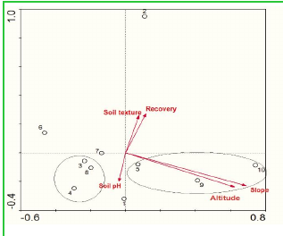

• 숲의 낙엽 지역에서는 세 개의 층이 존재하지만, 허브식물이 우세한 특징을 보인다.
우리는 이 조사에서 식물구성의 진화 과정에서 네 가지 주요 단계를 구분한다고 믿는다:
1단계 "허브식물"은 간섭 기간 동안 우발적 식물로 구성된다,
2단계 "허브식물/관목"은 간섭 기간 이후 2~4년에 대부분 반지하성(半地下性)의 큰 다년생 허브식물로 특징지어진다,
3단계 "관목/관목"은 간섭 기간 이후 5회에 걸쳐 관목군이 풀군과 숲군 사이의 전환을 나타낸다,
4단계 "숲으로의 이행"은 간섭 기간 이후 15~20회에 걸쳐 숲군과 식물군(2차림) 사이의 전환을 나타내는 나무군으로 특징지어진다.
3.5. 환경 파라미터가 군집에 미치는 영향
식물구성의 변이와 생태학적 변이 간의 관계는 직접적인 경사 분석을 통해 강조되었다. 얻어진 결과는 CCA(Canonical Correspondence Analysis)의 첫 번째 두 축(그림 5)에 조사가 분포하는 것을 보여준다. 첫 번째 축은 종의 회복과 토양의 질감에 대한 증가 경사와 관련된 것으로 보이며, 두 번째 축은 고도와 경사와 더 관련이 있다.
첫 번째 두 축은 종과 환경 파라미터 간의 관계의 61.3%를 설명하며, 종-환경 및 환경 변수는 두 번째 축에서 71.1%를 차지한다. 일반적으로 환경 변수와 식물구성 변이 간의 관계는 매우 유의미하다(표 4).
| 축 | 1 | 2 | 3 | 4 |
|---|---|---|---|---|
| 고유값: | 0.319 | 0.204 | 0.155 | 0.093 |
| 종-환경 상관: | 0.961 | 0.715 | 0.601 | 0.628 |
| 종 데이터의 누적 변이 퍼센트: | 31.9 | 52.2 | 67.8 | 77.1 |
| 종-환경 관계: | 45.3 | 61.3 | 69.9 | 75.6 |
| 모든 고유값의 합계: | 1.000 | |||
| 모든 캐노니컬 고유값의 합계 : | 71.1% | |||
이 10개의 군집은 계층적 상승 분류에서 나온 덴드로그램(그림 5)에서 식별 가능하다. CCA의 첫 번째 두 축에 조사가 분포하는 방식과 이들 식물사회학적 규범에 기반한 두 축의 계산 결과는 축 1이 p < 0.001로 성공적 경사와 관련된 것으로 보이며, 축 2에 따른 조사의 배열은 고도와 경사와 더 관련이 있음을 보여준다(p <0.001).

4.1. 알베르틴 분지의 숲 가장자리와 Chablis의 중요성
숲 가장자리와 Chablis는 농업과 도시화 동력에 의해 주도된 오랜 숲 분할 역사로 인해 많은 알베르틴 분지 지역에서 널리 퍼져 있는 풍경 요소들이다. 숲 가장자리가 다세포 생물다양성에 중요한 역할을 한다는 점은 이전에 인정되었지만, 가장자리 효과의 방향과 정도에 대한 변동을 설명하는 메커니즘은 드물게 탐구되었다(Plumptre et al. 2011, Mangambu et al 2017).
가장자리 효과의 정도는 숲 Chablis와 인접한 개방형 서식지 간의 대비와 풍경 분할의 정도, 숲 서식지 면적 및 다중 가장자리의 누적 효과와 함께 증가할 수 있다. 숲 Chablis와 가장자리는 땅 관리에 대한 도전 과제이다(Vail lancourt 2008). 그들은 높은 생물다양성을 포함하고, 생태학적 과정을 조절하며, 농업과 산림에 환경 서비스를 제공한다. 따라서, 숲 Chablis와 가장자리 다양성에 적응된 관리 조치를 제안하기 위해 숲 Chablis와 가장자리가 식물에 미치는 영향을 정확히 평가하고 측정하는 것이 필요하다(Whitney 1989; White and Jentsch 2001; Colin et al. 2009).
4.2. Pteridiae의 다양성 지수 및 특정 풍부도의 변동
다양성 지수는 커뮤니티의 다양성을 평가하는 객관적인 기준이다(Ramade 1994). 이 식물사회학적 방법은 우리가 사용한 소프트웨어의 도움을 받아 사회적 그룹을 구성하는 식물사회학적 그룹으로 일관된 집합을 구성하도록 설계되었다(Legendre and Legendre 2012).
이 논문에서 얻어진 결과는, 고도, 토양의 성질, 낙엽의 질감 및 다양한 숲 형성에도 불구하고, 다양성 지수 y가 유의미하고 F 지수가 조사 간의 유사성을 보여준다는 것이다. 특히, 모든 이러한 지수의 최고 값은 숲의 낙엽 지역에서 수행된 조사에서 얻어졌다. 또한, 전체적인 종의 풍부도 분석은 허브 층에서 가장 높았으며, 그 다음은 관목 층에서 종과 개체 수로 나타났다. 결과는 Kivu 호수 동쪽 능선에서 Habiyaremye(1997)가 얻은 결과와 일치한다. 저자는 Pteridium aquilinum과 Pteridio-Panicetum adenophori 연합의 우세 조사가 허브와 준관목 층에서 풍부하다고 보여준다.
가족의 비율에 관해서는 각각 Aspleniaceae, Asteraceae, Euphorbiaceae, Fabaceae, Apocynaceae 및 Rubiaceae 가족이 더 다양한 종을 보인다는 것을 발견했다. Amami et al.(2008)과 Habiyaremye(1997)는 KBNP의 대나무가 아닌 지역에서 동일한 결과를 발견했으며, Kivu 호수 동쪽 능선에서 Pteridio-Panicetum adenophori 연합에서도 동일한 가족을 인식했다. 두 저자는 Rubiaceae, Fabaceae, Lamiaceae, Asteraceae 및 Poaceae 가족을 인정했다. 이 식물학적 유사성은 주로 생태학적 및 식물지리학적 유사성과 관련이 있다. White(1983)에 따르면, 아프리카의 모든 열대 몬타나 숲에서 Rubiaceae, Fabaceae, Asteraceae 및 Poaceae 가족은 개인과 종 모두에서 가장 풍부하다.